We are an interdisciplinary group working across hydrology, Earth observation, geospatial science, and river–human interactions.
Principal InvestigatorLab Director
Principal Investigator
Peirong Lin
Institute of Remote Sensing and GIS School of Earth and Space Sciences, Peking University
Peirong Lin leads GeoWater Lab at Peking University. Her research combines Earth system science and models with remote sensing, GIS, and geospatial analytics to study terrestrial water cycling, river systems, and flood–human interactions. She completed postdoctoral training in Civil and Environmental Engineering at Princeton University and received her Ph.D. in Water, Climate, and Environment from The University of Texas at Austin.
Reservoir modeling and operations; GeoAI for hydrologic systems
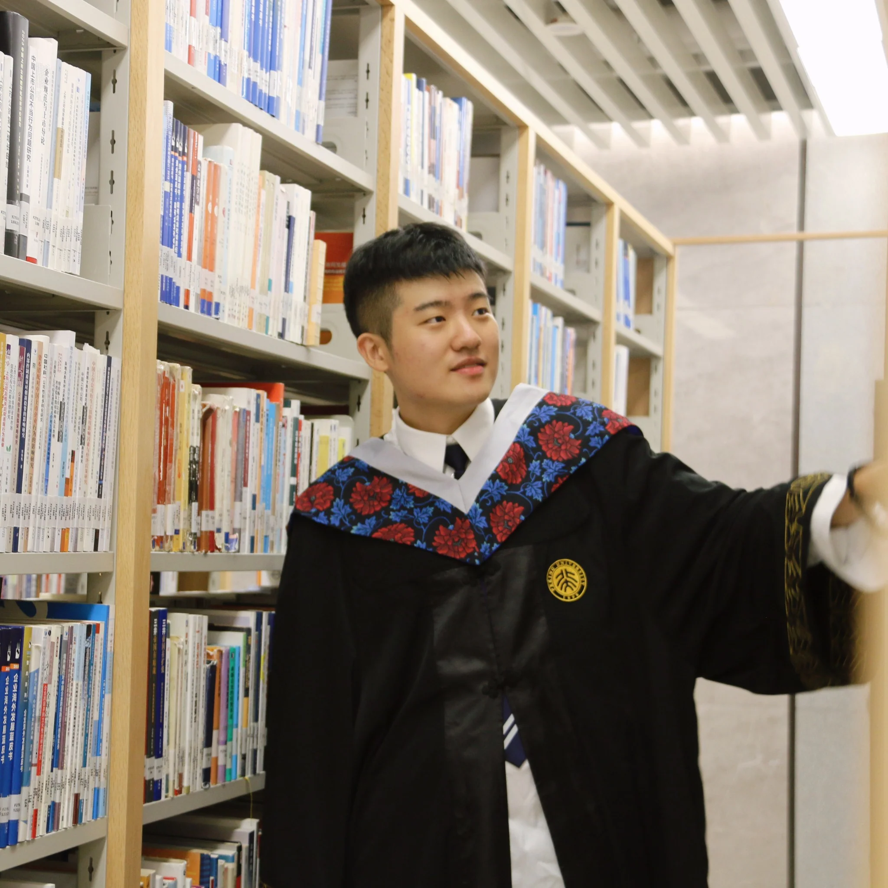
Jinxuan Guo
MS student (2026/9–)
Multisource inference for Earth system hydrology
Yicong Liu
Undergraduate student (2026/3–)
Satellite river discharge; Human-impacted hydrology; Remote sensing-informed GNNs
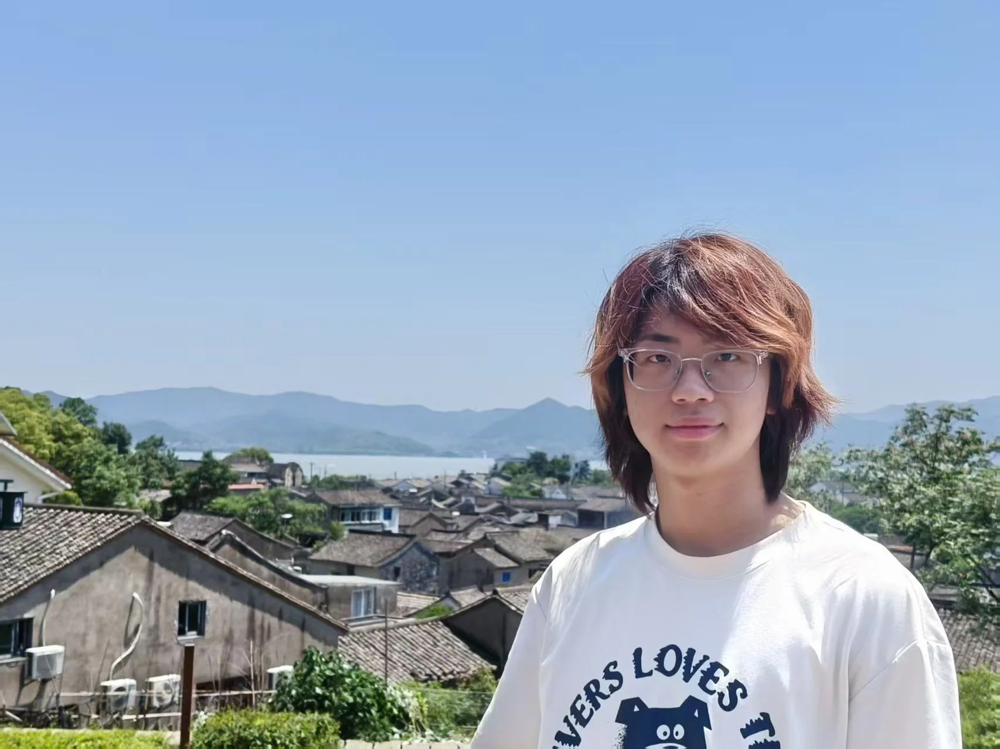
Han Bao
Undergraduate student (2026/3–)
Hydraulic geometry; River regulation
Former Students, Postdocs, & Visiting StudentsPrevious Members
Xiangyong Lei
Former PhD candidate (2022–2026)
Now Associate Professor, Fujian Normal University
Physics-based modeling; hydrometeorology
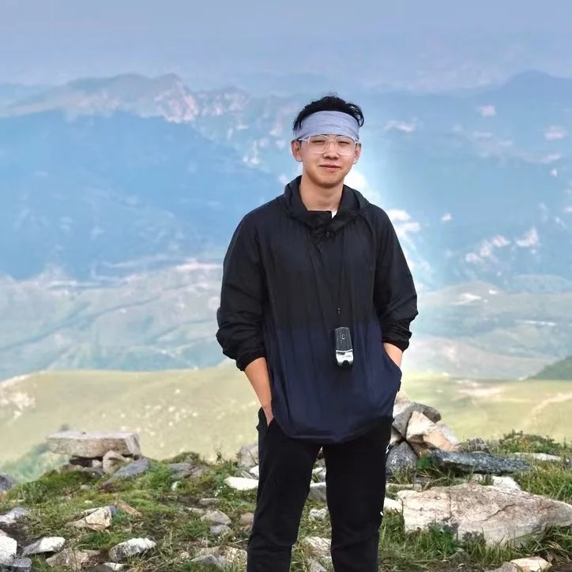
Kaihao Zheng
Former MS student (2023–2026); former undergraduate researcher
Geospatial science; sustainability science
Awards & Honors
Grand Prize Award, Challenge Cup @ PKU
Outstanding Students Fellowship of Beijing
National Scholarship for Undergraduate Students
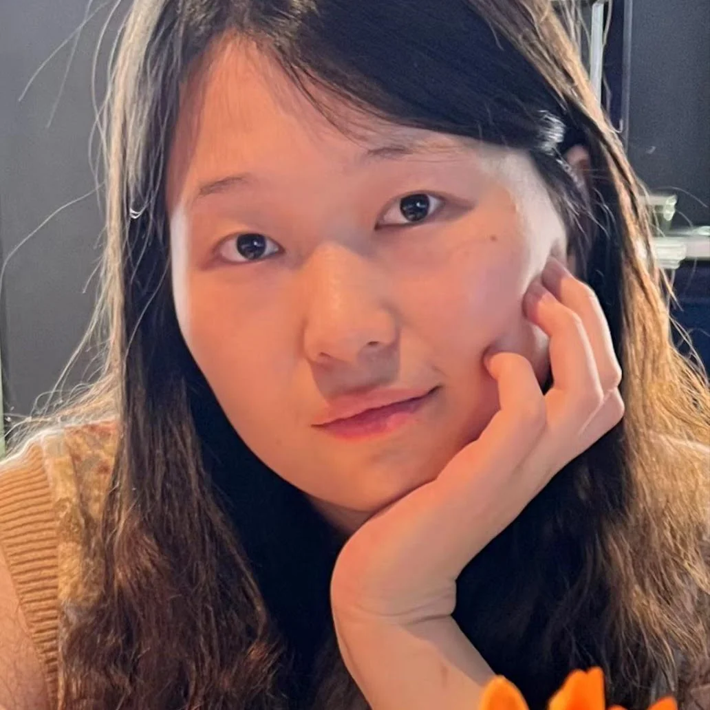
Jie Xu
Former postdoc
Remote sensing of hydrology
Meng Ding
Visiting student (2021/10–2023/08)
Now PhD student at the University of Kansas · Human–water relationships
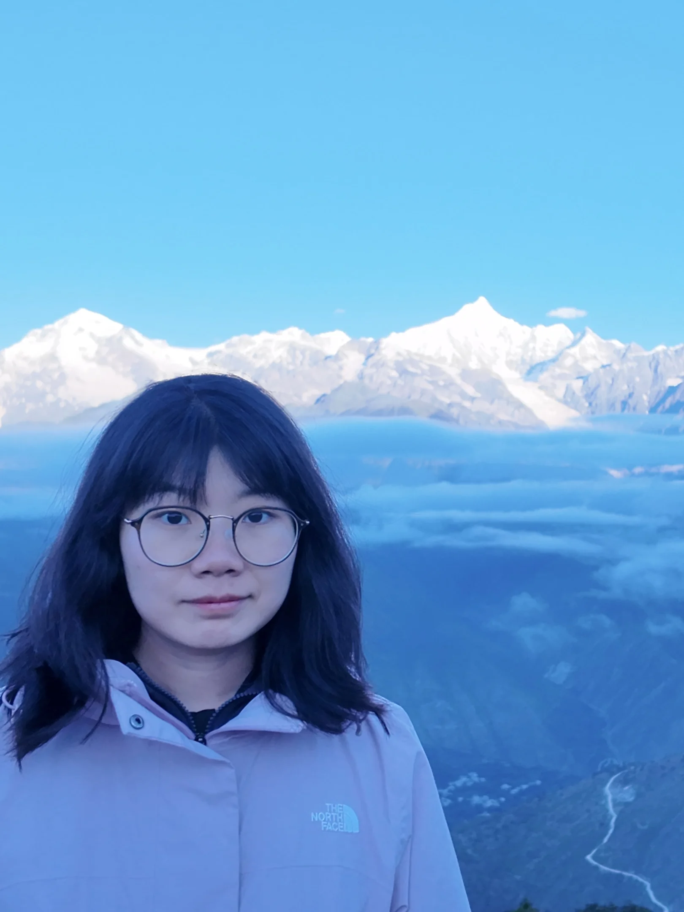
Wenli Fei
Visiting student (2023/6–2023/08)
Now Assistant Research Professor at CAS-Shenyang · Land hydrologic modeling
Koutian Wu
Visiting student (2024/6–2024/08)
Now PhD student at UT Austin · Land hydrologic modeling
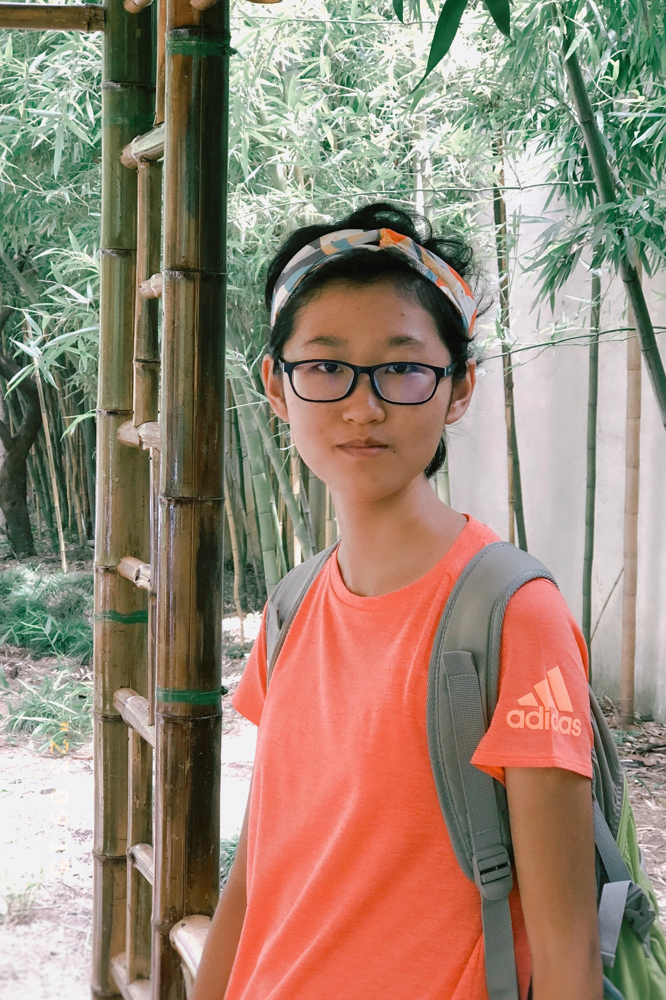
Peng Yao
Undergraduate researcher
Now PhD student at CAS-AIRS · Cold-region hydroclimatology
PhotosLab Moments
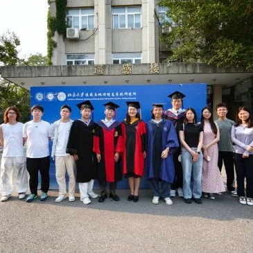
July 2026 · Graduation Ceremony
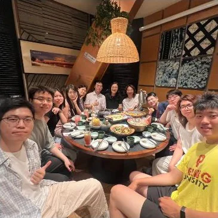
July 2026 · Graduation Party
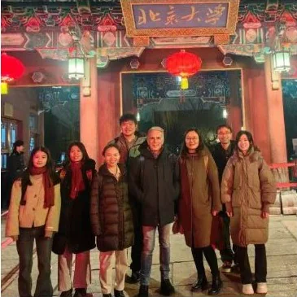
March 2026 · Cohosting Prof. Paul Bate’s visit
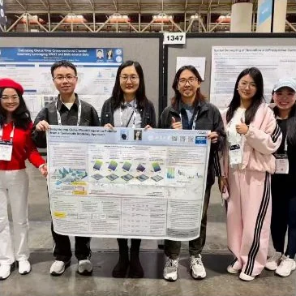
AGU 2025 · GeoWater Lab presentations
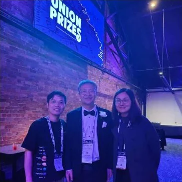
AGU 2025 · Celebrating Prof. Yang’s big moment
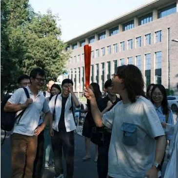
June 2025 · Hosting Prof. Dai Yamazaki’s visit to PKUGeoWater Lab · Group gathering and field visitGeoWater Lab · Celebrating research milestonesGeoWater Lab · Conference presentations
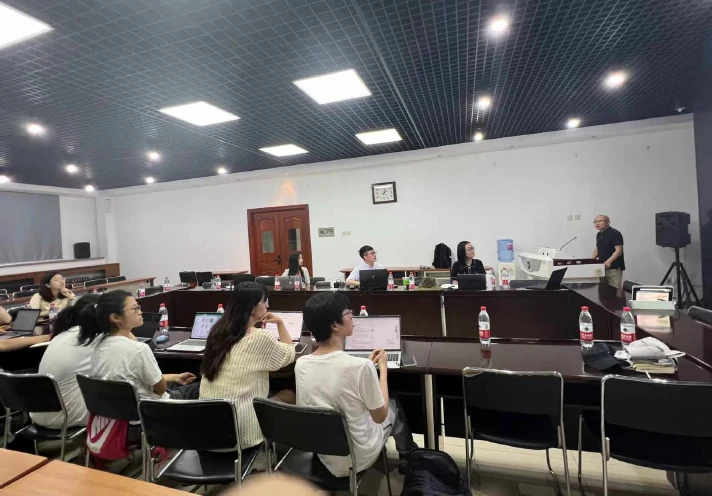
GeoWater Lab · Research seminar and discussion
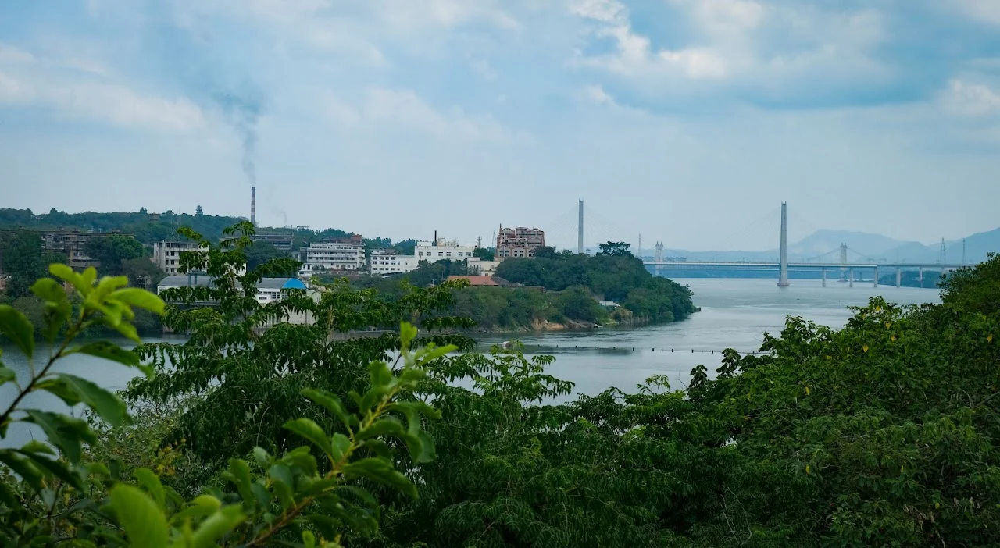
GeoWater Lab · River and floodplain field observations
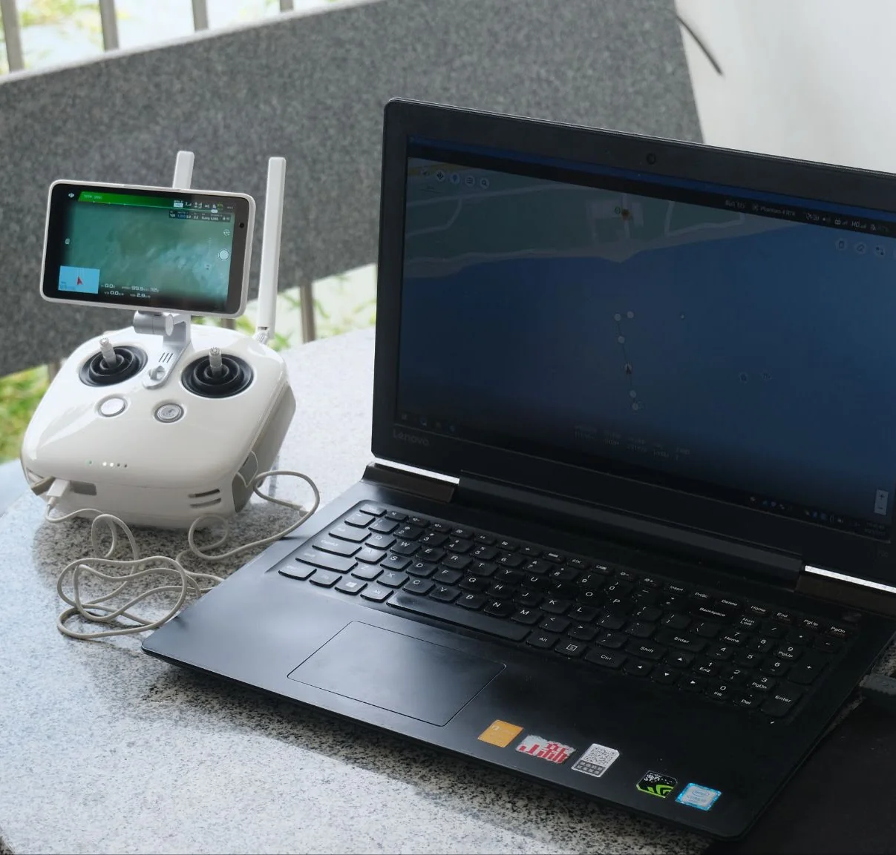
GeoWater Lab · Hydrological monitoring and modeling
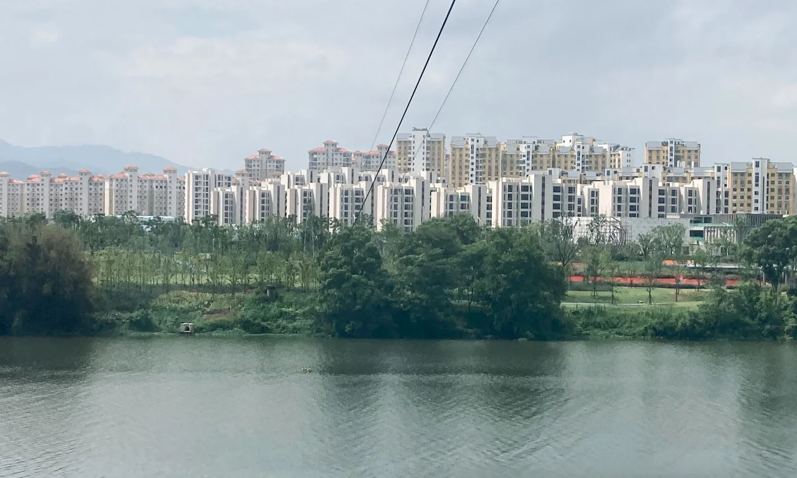
GeoWater Lab · River landscape fieldwork
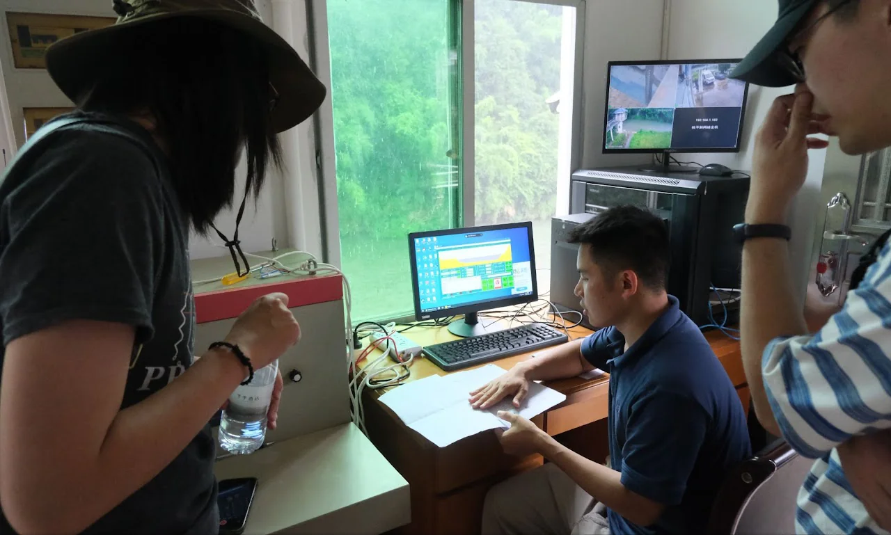
GeoWater Lab · Hands-on field data analysis
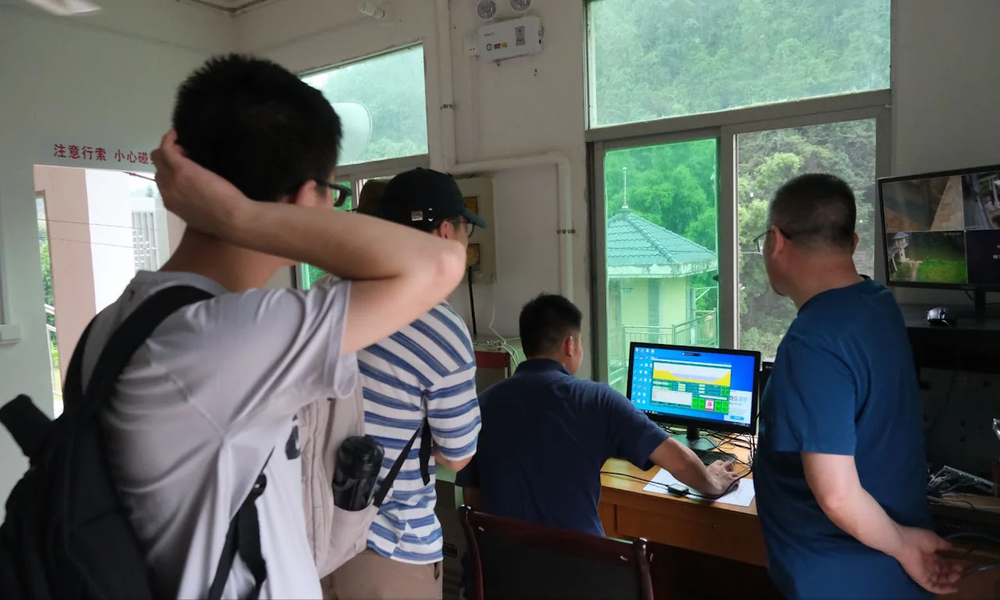
GeoWater Lab · Reviewing hydrological observationsJuly 2026 · Graduation CeremonyJuly 2026 · Graduation PartyMarch 2026 · Cohosting Prof. Paul Bate’s visitAGU 2025 · GeoWater Lab presentationsAGU 2025 · Celebrating Prof. Yang’s big momentJune 2025 · Hosting Prof. Dai Yamazaki’s visit to PKUGeoWater Lab · Group gathering and field visitGeoWater Lab · Celebrating research milestonesGeoWater Lab · Conference presentationsGeoWater Lab · Research seminar and discussionGeoWater Lab · River and floodplain field observationsGeoWater Lab · Hydrological monitoring and modelingGeoWater Lab · River landscape fieldworkGeoWater Lab · Hands-on field data analysisGeoWater Lab · Reviewing hydrological observations